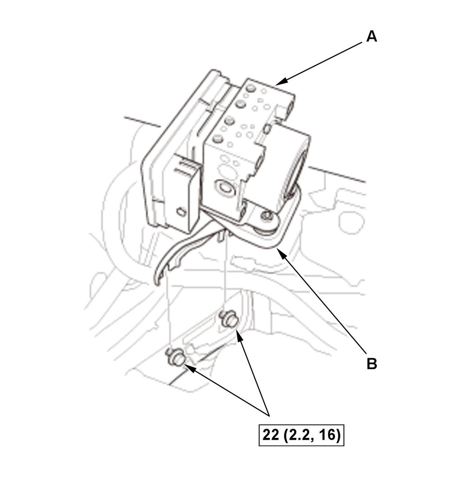
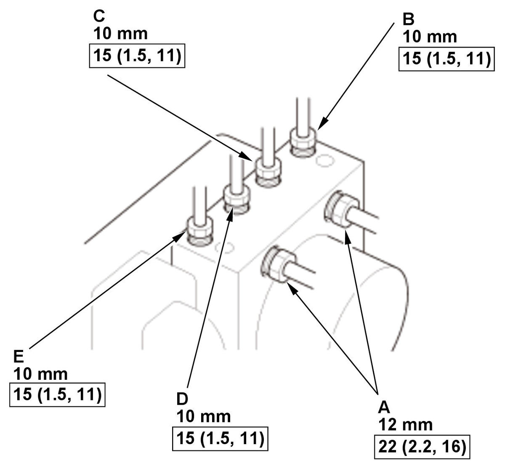

VSA Modulator-Control Unit Removal and Installation (5-door) (2017 2018 2019 2020 2021): Installation
NOTE:
- How to read the torque specifications .
- Review the Service Precautions before doing repairs or service .
- Do not damage or drop the VSA modulator-control unit as it is sensitive.
- Do not use power tools when installing the VSA modulator-control unit.
- When replacing the VSA modulator-control unit, do the immobilizer system registration.
- VSA Modulator-Control Unit Bracket - Install
1. Install the modulator sub bracket (A) to the VSA modulator-control unit (B). 2. Install the modulator bracket (C) to the modulator sub bracket.
- VSA Modulator-Control Unit - Install

Courtesy of HONDA, U.S.A., INC.1. Install the VSA modulator-control unit (A) with the bracket (B). 2. Align the connecting surface of the VSA modulator-control unit connector (A). 3. Pull down the lever (B) of the VSA modulator-control unit connector, then confirm the connector is fully seated.

Courtesy of HONDA, U.S.A., INC.4. Connect the brake lines.
NOTE: Brake lines are connected to the master cylinder (A), the left-rear (B), the right-front (C), the left-front (D), and the right-rear (E) brake systems. - Connector Bracket - Install (2.0 L Engine)
1. Install the bracket (A). 2. Install the clip (B).
3. Install the connectors (C) to the bracket.
- 12 Volt Battery Terminal - Connect
- Brake System - Bleed
- Immobilizer System - Register
NOTE:
- When replacing the VSA modulator-control unit, do the immobilizer system registration.
- Failure to complete the immobilizer system registration will lead to a no-start condition the next time the battery is disconnected.
Without keyless access system
1. Do the immobilizer-keyless control unit registration procedure .
With keyless access system
- VSA Modulator-Control Unit Software - Check
1. Make sure the VSA modulator-control unit has the latest software. If it does not have the latest, update the software in the VSA modulator-control unit. - VSA Modulator-Control Unit After Install - Check
1. Turn the vehicle to the ON mode. 2. Apply and release the parking brake 2 times, then make sure that the brake system indicator (red) goes OFF.
NOTE: If the brake system indicator (red) does not go OFF, check for poor connection at the VSA modulator-control unit connector.
- VSA Sensor Neutral Position - Memorize
- Clutch Pedal Stroke Sensor Zero Point - Learn (M/T)
1. Turn the vehicle to the ON mode without pressing the clutch pedal. 2. Wait for 2 seconds, then make sure that the VSA indicator goes OFF.
NOTE:
- If the VSA indicator goes OFF, the clutch pedal stroke sensor zero point learning is complete.
- If the VSA indicator blinks, the learning failed. Turn the vehicle to the OFF mode, and try again.
- TPMS - Calibrate (With TPMS)